survey_data <- readRDS("../Data/encuesta.rds")10 Imputación usando R
La ausencia de respuesta es un fenómeno frecuente en las encuestas de hogares, especialmente después de la pandemia de COVID-19. Sus causas son múltiples: cuestionarios extensos, renuencia de las personas encuestadas a proporcionar información sensible y dificultades para acceder a las áreas seleccionadas debido a desastres naturales o situaciones de violencia, entre otras. Una proporción elevada de valores faltantes en una variable puede comprometer la calidad de las estimaciones obtenidas con los estimadores clásicos.
El objetivo de este anexo es examinar las posibles causas de la ausencia de respuesta en las encuestas de hogares, su impacto en la estimación de indicadores y algunas alternativas para tratar los datos faltantes. Entre los avances metodológicos en el contexto de muestras complejas se encuentran la imputación múltiple (Buuren 2012; Carpenter y Kenward 2013; Berglund y Heeringa 2014; Raghunathan 2016) y la imputación fraccional (Kim y Fuller 2004; Kim y Shao 2014).
10.1 Tres patrones para la ausencia de respuesta
Para describir la ausencia de respuesta, sea \(\boldsymbol{X}_{n \times p} = x_{ij}\) una matriz completa (sin valores faltantes), donde \(X_{ij}\) es el valor de la variable \(j\) para el individuo \(i\), con \(j=1, \dots, p\) e \(i=1, \dots, n\). Además, se define la matriz indicadora \(\boldsymbol{M}_{n \times p} = m_{ij}\), donde \(m_{ij} = 1\) si el valor de \(x_{ij}\) es un dato faltante y \(m_{ij}=0\) si \(x_{ij}\) está presente. La matriz \(M\) describe el patrón de datos faltantes, y la media de cada columna representa la proporción de valores faltantes de la variable correspondiente. A continuación, se describen tres mecanismos de ausencia de respuesta:
- La matriz \(\boldsymbol{M}_{n \times p}\) presenta un comportamiento completamente al azar (MCAR, por sus siglas en inglés) si la probabilidad de respuesta es completamente independiente de las variables observadas y de las no observadas. En este caso, el mecanismo de respuesta es ignorable tanto para inferencias basadas en muestreo como en máxima verosimilitud.
- La matriz \(\boldsymbol{M}_{n \times p}\) presenta un comportamiento al azar (MAR, por sus siglas en inglés) si la probabilidad de respuesta es completamente independiente de las variables no observadas y no de las observadas. En este caso, el mecanismo de respuesta se considera ignorable para inferencias basadas en máxima verosimilitud.
- La matriz \(\boldsymbol{M}_{n \times p}\) presenta un comportamiento no al azar (MNAR, por sus siglas en inglés) si la probabilidad de respuesta no es completamente independiente de las variables no observadas y posiblemente también de las observadas. El mecanismo de respuesta es no ignorable.
La tabla 10.1 ilustra datos faltantes en posiciones dispersas. Cada fila representa un caso y cada columna \(X_j\) una variable. O indica un dato observado y ? un dato faltante.
| Caso | \(X_1\) | \(X_2\) | \(X_3\) | \(X_4\) | \(X_5\) | \(X_6\) | Tipo de caso |
|---|---|---|---|---|---|---|---|
| 1 | O | O | O | O | O | O | Completo |
| 2 | O | O | O | O | O | O | Completo |
| 3 | O | O | O | O | O | O | Completo |
| 4 | O | O | O | O | O | O | Completo |
| 5 | O | O | O | O | ? | ? | Incompleto |
| 6 | ? | O | O | O | O | O | Incompleto |
| 7 | O | ? | O | O | O | ? | Incompleto |
| 8 | ? | O | ? | O | ? | ? | Incompleto |
Como en los capítulos anteriores, se carga la base de datos de la muestra seleccionada. Para ilustrar el tratamiento de los datos faltantes, se introducirán pérdidas de información de forma simulada. La base se carga de la siguiente manera:
Primero, se cargan los paquetes que se utilizarán en este anexo, se seleccionan las personas mayores de 15 años y se calculan las proporciones de personas desempleadas, inactivas y empleadas antes de generar los valores faltantes:
library(tidyverse)
library(survey)
library(srvyr)
library(TeachingSampling)
library(patchwork)
survey_data <- survey_data %>%
filter(Age >= 15)
employment_proportion <- prop.table(table(survey_data$Employment))
employment_proportion
Unemployed Inactive Employed
0.041 0.374 0.585 También se calcula el promedio de ingresos en la muestra:
income_mean <- mean(survey_data$Income, na.rm = TRUE)
income_mean[1] 604A continuación, se genera un 20 % de valores faltantes siguiendo un mecanismo MCAR. La función sample_frac del paquete dplyr permite seleccionar aleatoriamente una fracción de las filas de un conjunto de datos.
set.seed(1234)
mcar_data <- sample_frac(survey_data, 0.8)
mcar_plot_data <- bind_rows(
list(mcar_data = mcar_data, survey_data = survey_data),
.id = "data_source"
)La figura 10.1 compara el ingreso por zona y sexo en la base completa (survey_data) y en la muestra con pérdida MCAR (mcar_data). Las medianas y la amplitud de las cajas son similares en ambas bases. La línea roja indica la media del ingreso en la base completa.
zone_income_plot <- ggplot(mcar_plot_data, aes(x = Zone, y = Income)) +
geom_boxplot() +
facet_grid(. ~ data_source) +
theme_bw() +
geom_hline(yintercept = mean(survey_data$Income), color = "red")
sex_income_plot <- zone_income_plot + aes(x = Sex)
zone_income_plot | sex_income_plot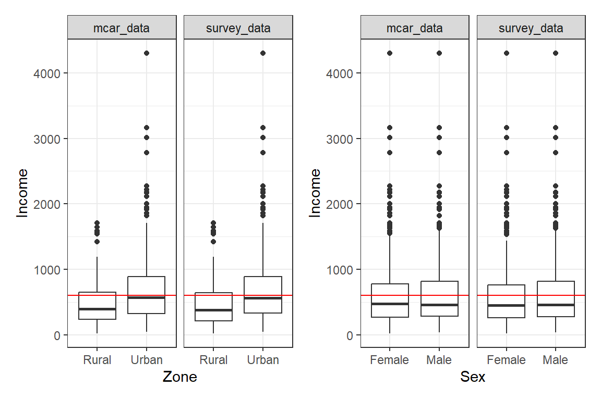
La figura 10.2 muestra las densidades del ingreso para la base completa (survey_data) y la muestra con pérdida MCAR (mcar_data), en el total y por sexo. Las curvas prácticamente se superponen, lo que indica pocos cambios en la distribución en esta simulación. La línea roja representa la media del ingreso en la base completa.
income_density_plot <- ggplot(mcar_plot_data, aes(x = Income, fill = data_source)) +
geom_density(alpha = 0.3) +
theme_bw() +
theme(legend.position = "bottom") +
geom_vline(xintercept = mean(survey_data$Income), color = "red")
sex_income_density_plot <- income_density_plot +
facet_grid(. ~ Sex) + theme(legend.position = "none")
income_density_plot / sex_income_density_plot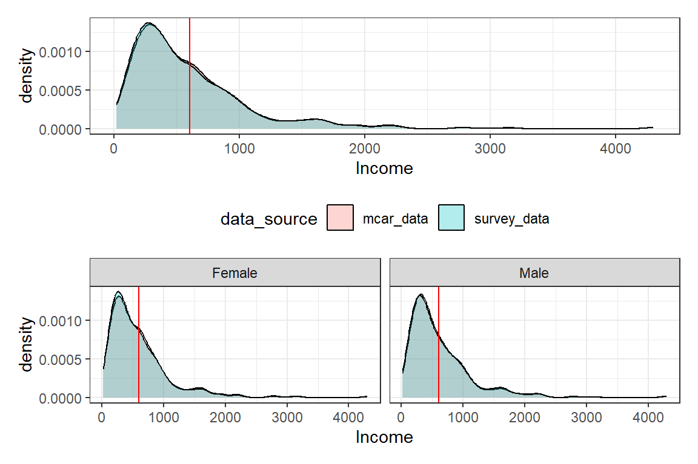
La figura 10.3 compara las densidades del gasto en la base completa (survey_data) y la muestra con pérdida MCAR (mcar_data), en el total y por sexo. La superposición de las curvas muestra que se conserva la forma de la distribución. La línea roja indica la media del gasto en la base completa.
expenditure_density_plot <- ggplot(
mcar_plot_data, aes(x = Expenditure, fill = data_source)
) +
geom_density(alpha = 0.3) +
theme_bw() +
theme(legend.position = "bottom") +
geom_vline(xintercept = mean(survey_data$Expenditure), color = "red")
sex_expenditure_density_plot <- expenditure_density_plot +
facet_grid(. ~ Sex) + theme(legend.position = "none")
expenditure_density_plot / sex_expenditure_density_plot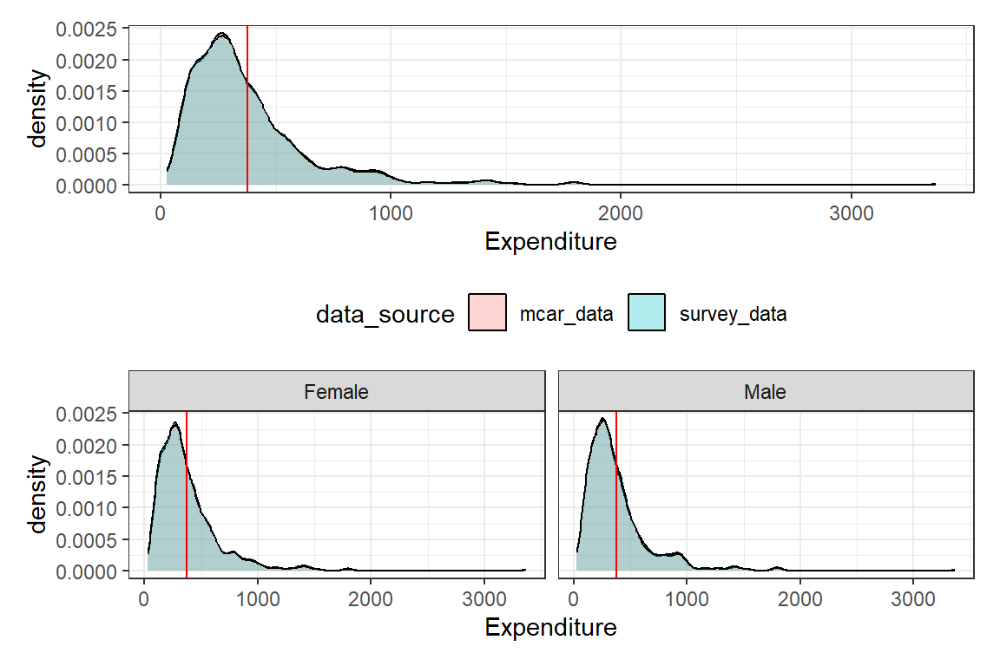
A continuación, se simula una pérdida de información al azar (MAR) que depende de la zona y del sexo:
set.seed(1234)
stratum_id <- paste0(survey_data$Zone, survey_data$Sex)
table(stratum_id)stratum_id
RuralFemale RuralMale UrbanFemale UrbanMale
481 428 531 439 sample_indices <- S.STSI(
S = stratum_id,
Nh = c(481, 428, 531, 439),
nh = c(20, 380, 20, 280)
)
mar_data <- survey_data[-sample_indices, ]
mar_plot_data <- bind_rows(
list(mar_data = mar_data, survey_data = survey_data),
.id = "data_source"
)El código anterior utiliza el paquete TeachingSampling para realizar un muestreo aleatorio en cada combinación de zona y sexo. Primero, se fija la semilla en 1234 para que los resultados sean reproducibles. Luego, se crea la variable stratum_id, que combina Zone y Sex mediante la función paste0 para definir los estratos. La función table muestra la frecuencia de cada estrato. El muestreo estratificado se realiza con S.STSI, cuyos argumentos son S, el vector de estratos; Nh, el número de unidades en cada estrato (469, 411, 510 y 390); y nh, el tamaño de muestra deseado en cada estrato (20, 380, 20 y 280).
El muestreo estratificado devuelve un vector con los índices de las filas seleccionadas. Estas observaciones se excluyen de la base para crear mar_data. Por último, la función bind_rows del paquete dplyr reúne survey_data y mar_data en mar_plot_data. La nueva variable data_source identifica la base de origen de cada observación.
La figura 10.4 compara el gasto por zona y sexo entre la base completa (survey_data) y la muestra con pérdida MAR (mar_data). Las medianas permanecen próximas, aunque cambian la dispersión y algunos valores extremos, especialmente entre los hombres. La línea roja señala la media del gasto en la base completa.
mar_expenditure_boxplot <- ggplot(mar_plot_data, aes(x = data_source, y = Expenditure)) +
geom_hline(yintercept = mean(survey_data$Expenditure), color = "red") +
geom_boxplot() +
facet_grid(Zone ~ Sex) +
theme_bw()
mar_expenditure_boxplot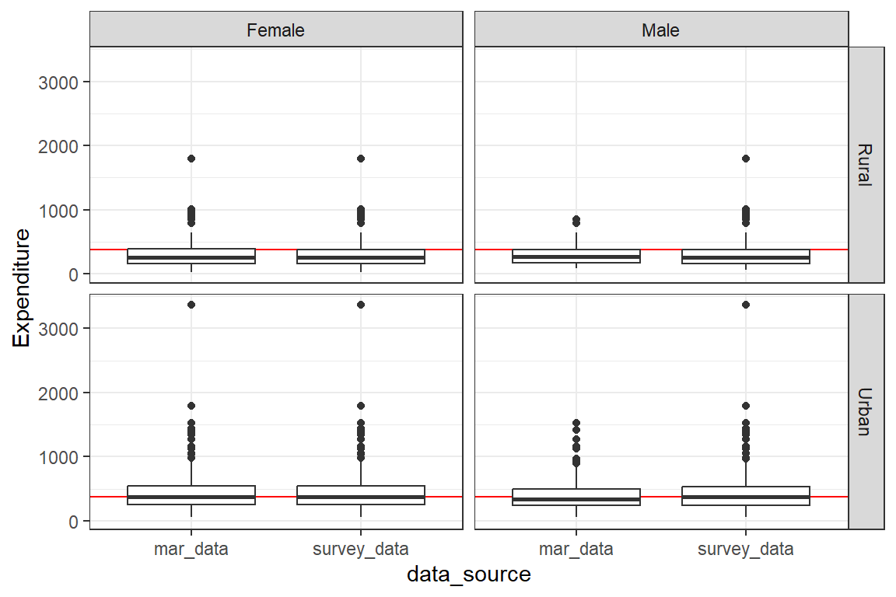
La figura 10.5 compara las densidades del ingreso de la base completa (survey_data) y la muestra con pérdida MAR (mar_data). Las diferencias son pequeñas en el total y más visibles entre los hombres, lo que muestra la utilidad de revisar las desagregaciones. La línea roja indica la media del ingreso en la base completa.
income_density_plot <- ggplot(mar_plot_data, aes(x = Income, fill = data_source)) +
geom_density(alpha = 0.3) +
theme_bw() +
theme(legend.position = "bottom") +
geom_vline(xintercept = mean(survey_data$Income), color = "red")
sex_income_density_plot <- income_density_plot +
facet_grid(. ~ Sex) + theme(legend.position = "none")
income_density_plot / sex_income_density_plot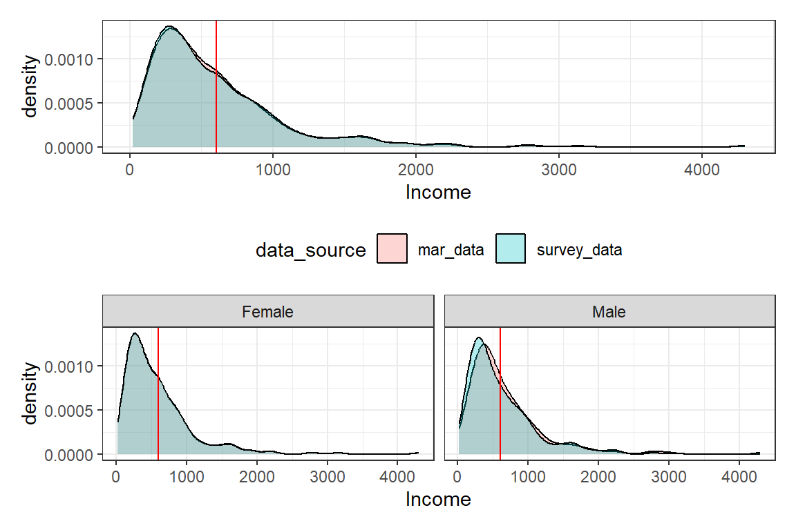
La figura 10.6 muestra las densidades del gasto en la base completa (survey_data) y la muestra con pérdida MAR (mar_data), en el total y por sexo. Las curvas son próximas entre las mujeres y presentan diferencias más visibles entre los hombres. La línea roja representa la media del gasto en la base completa.
expenditure_density_plot <- ggplot(
mar_plot_data, aes(x = Expenditure, fill = data_source)
) +
geom_density(alpha = 0.3) +
theme_bw() +
theme(legend.position = "bottom") +
geom_vline(xintercept = mean(survey_data$Expenditure), color = "red")
sex_expenditure_density_plot <- expenditure_density_plot +
facet_grid(. ~ Sex) + theme(legend.position = "none")
expenditure_density_plot / sex_expenditure_density_plot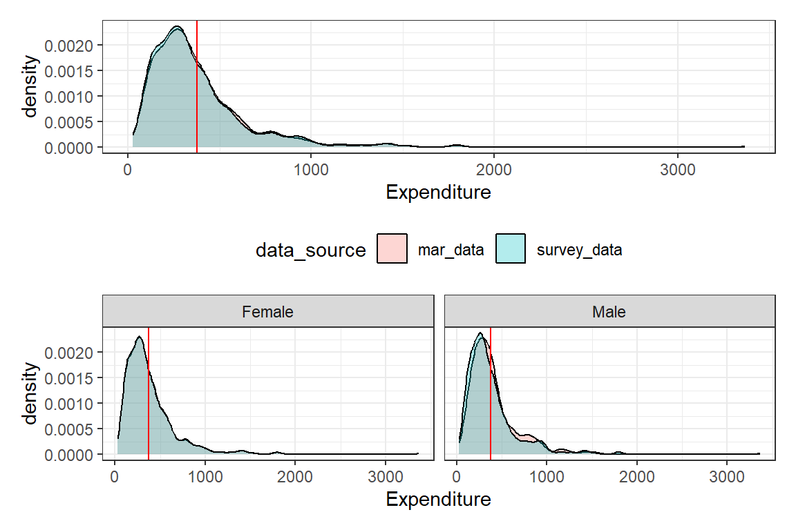
Por último, se simula una pérdida de información no al azar (MNAR). Como se explicó al inicio del anexo, en este mecanismo la probabilidad de que un dato falte está relacionada con su propio valor. Esta dependencia puede introducir un sesgo apreciable en la inferencia y el análisis estadístico de las encuestas de hogares, por lo que el tratamiento de los datos faltantes requiere especial atención.
mnar_data <- survey_data %>%
arrange(Income) %>%
slice(1:1300L)
mnar_plot_data <- bind_rows(
list(mnar_data = mnar_data, survey_data = survey_data),
.id = "data_source"
)El código anterior conserva en mnar_data las 1300 observaciones con menores ingresos y las reúne con la base completa en mnar_plot_data. La figura 10.7 muestra cómo esta selección elimina la cola de ingresos altos y desplaza la distribución hacia valores menores. La media de los casos conservados, en azul, queda por debajo de la media de la base completa, en rojo.
mnar_income_density_plot <- ggplot(mnar_plot_data, aes(x = Income, fill = data_source)) +
geom_density(alpha = 0.2) +
theme_bw() +
theme(legend.position = "bottom") +
geom_vline(xintercept = mean(survey_data$Income), color = "red") +
geom_vline(xintercept = mean(mnar_data$Income), color = "blue")
mnar_income_density_plot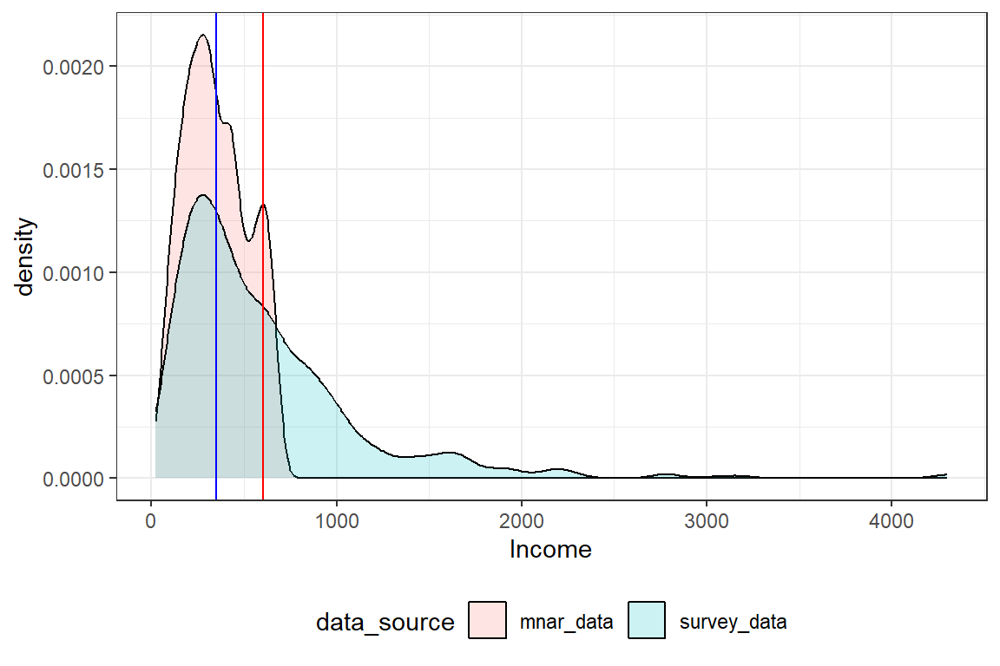
La figura 10.8 compara la distribución del gasto en la base completa (survey_data) y entre los casos conservados bajo MNAR (mnar_data). La selección por ingreso también reduce la presencia de gastos altos. La línea azul señala la media del gasto de los casos conservados y la roja, la media de la base completa.
mnar_expenditure_density_plot <- ggplot(
mnar_plot_data, aes(x = Expenditure, fill = data_source)
) +
geom_density(alpha = 0.2) +
theme_bw() +
theme(legend.position = "bottom") +
geom_vline(xintercept = mean(survey_data$Expenditure), color = "red") +
geom_vline(xintercept = mean(mnar_data$Expenditure), color = "blue")
mnar_expenditure_density_plot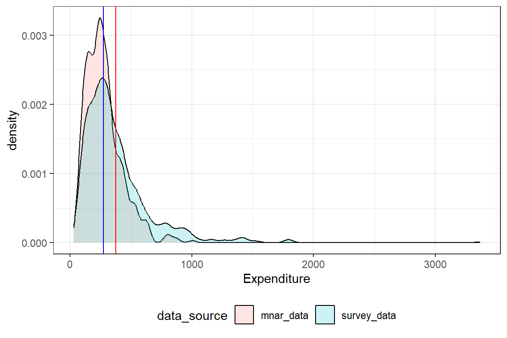
La figura 10.9 compara el ingreso por zona y sexo en la base completa (survey_data) y entre los casos conservados bajo MNAR (mnar_data). La eliminación de ingresos altos reduce las medianas y la dispersión, con cambios más marcados en la zona urbana. La línea roja indica la media del ingreso en la base completa.
mnar_income_boxplot <- ggplot(mnar_plot_data, aes(x = data_source, y = Income)) +
geom_hline(yintercept = mean(survey_data$Income), color = "red") +
geom_boxplot() +
facet_grid(Zone ~ Sex) +
theme_bw()
mnar_income_boxplot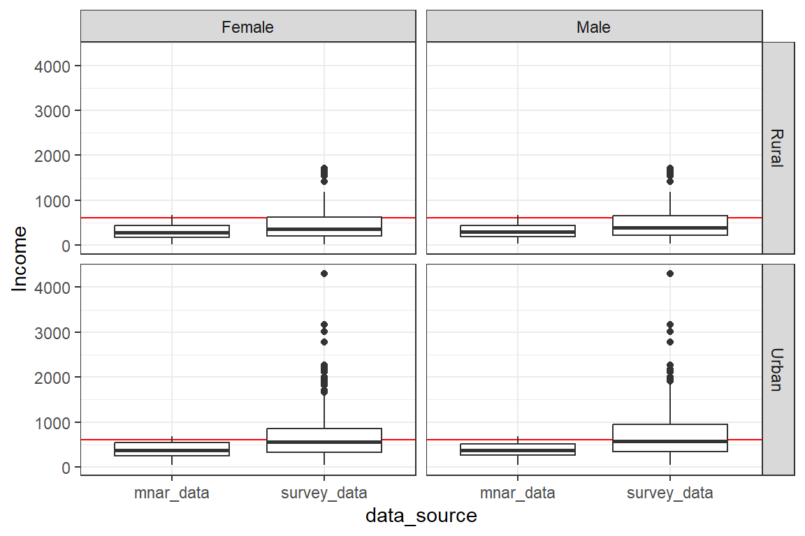
10.2 Algunos métodos de imputación
La sección anterior mostró cómo los mecanismos MCAR, MAR y MNAR pueden afectar la distribución de los datos observados. A partir de ese diagnóstico, esta sección presenta distintos métodos para reemplazar los valores faltantes utilizando la información disponible. Mediante ejemplos en R, se comparan los ingresos originales con los obtenidos por imputación, prestando atención tanto a su media como a su dispersión y distribución. El recorrido comienza con métodos de imputación simple y concluye con la imputación múltiple.
10.2.1 Imputación por la media no condicional
La imputación por la media no condicional consiste en reemplazar los valores faltantes con la media aritmética de los valores observados de la variable, sin considerar otras variables. La media se calcula a partir de todos los valores disponibles, independientemente de las características de las observaciones.
Para ilustrar el tratamiento de los datos faltantes bajo un mecanismo MCAR, se construye la siguiente base de datos:
survey_data <- full_join(
survey_data,
mcar_data %>% transmute(
HHID, PersonID, income_missing = Income, employment_missing = Employment
),
by = c("HHID", "PersonID")
)El código anterior utiliza la función full_join del paquete dplyr para combinar las dos bases de datos. Esta unión conserva todas las filas de ambas bases, combina las que tienen claves coincidentes y asigna valores faltantes donde no hay correspondencia. Para conocer el porcentaje de valores faltantes, se ejecuta el siguiente código:
survey_data %>%
group_by(Zone) %>%
summarise(missing_proportion = sum(is.na(income_missing) / n()))# A tibble: 2 × 2
Zone missing_proportion
<chr> <dbl>
1 Rural 0.208
2 Urban 0.193survey_data %>%
group_by(Sex) %>%
summarise(missing_proportion = sum(is.na(income_missing) / n()))# A tibble: 2 × 2
Sex missing_proportion
<chr> <dbl>
1 Female 0.184
2 Male 0.219La imputación por la media no condicional es un método simple y rápido. Puede resultar útil cuando la distribución de la variable no es muy asimétrica o cuando hay pocos valores faltantes en relación con el tamaño de la muestra. Sin embargo, presenta limitaciones cuando existen sesgos o patrones en los datos faltantes, o cuando las variables están muy correlacionadas. Aunque conserva la media de los valores observados, modifica la variabilidad y los percentiles, y puede afectar el sesgo. El método se aplica de la siguiente manera:
observed_income_mean <- mean(survey_data$income_missing, na.rm = TRUE)
survey_data <- survey_data %>%
mutate(income_imputed = ifelse(
is.na(income_missing), observed_income_mean, income_missing
))
sum(is.na(survey_data$income_imputed))[1] 0El código anterior calcula la media de los valores observados de income_missing y la almacena en observed_income_mean. Luego, reemplaza los valores faltantes con esa media y guarda el resultado en income_imputed. La última línea cuenta los valores faltantes de esta nueva columna de survey_data y confirma que no quedan datos sin imputar.
La figura 10.10 compara el ingreso original (Income) con el completado mediante la media no condicional (income_imputed). La imputación produce una concentración artificial alrededor de la media, visible como un pico pronunciado. Las líneas roja y azul representan las medias original e imputada, respectivamente; su cercanía no implica que las distribuciones sean iguales.
mean_plot_data <- survey_data %>%
dplyr::select(Zone, Sex, Income, income_imputed) %>%
tidyr::gather(data_source, income_value, -Zone, -Sex)
mean_density_plot <- ggplot(mean_plot_data, aes(x = income_value, fill = data_source)) +
geom_density(alpha = 0.2) +
theme_bw() +
theme(legend.position = "bottom") +
geom_vline(xintercept = mean(survey_data$Income), color = "red") +
geom_vline(xintercept = mean(survey_data$income_imputed), color = "blue")
mean_density_plot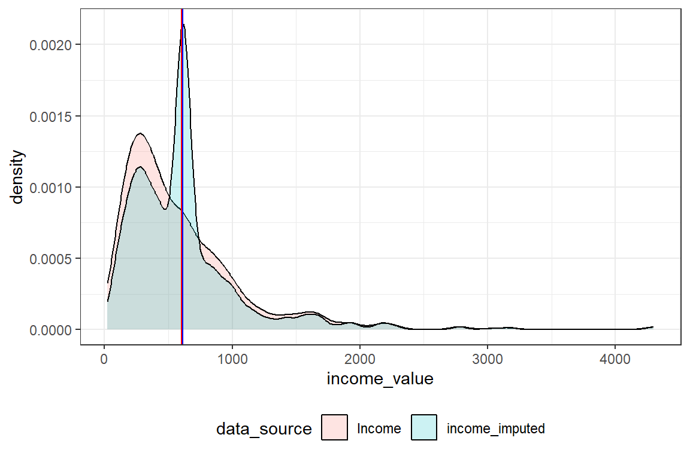
La figura 10.11 compara el ingreso original (Income) y el completado por la media no condicional (income_imputed) dentro de cada combinación de zona y sexo. Las cajas muestran cambios en la mediana y la dispersión al asignar un mismo valor a todos los datos faltantes. La línea roja señala la media del ingreso original.
mean_boxplot <- ggplot(mean_plot_data, aes(x = data_source, y = income_value)) +
geom_hline(yintercept = mean(survey_data$Income), color = "red") +
geom_boxplot() +
facet_grid(Zone ~ Sex) +
theme_bw()
mean_boxplot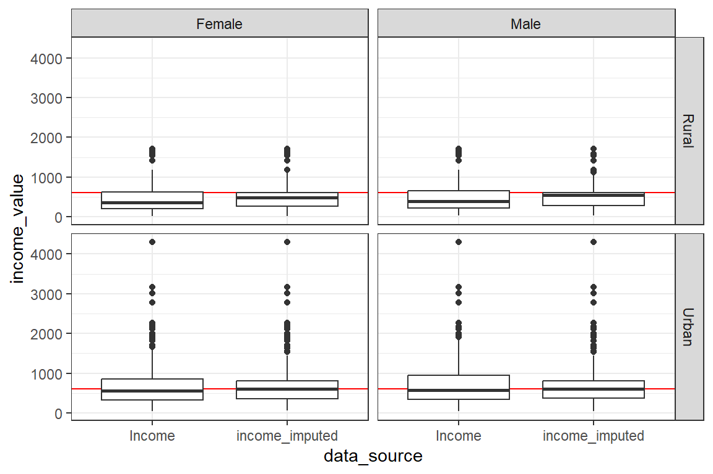
10.2.2 Imputación por la media condicional
La imputación por la media condicional reemplaza los valores faltantes de una variable numérica con las medias calculadas en grupos de observaciones que comparten características. A diferencia de la media no condicional, este método considera otras variables, ya que la media de la variable de interés puede cambiar según sus valores. Puede ofrecer mayor precisión cuando las variables están correlacionadas o cuando existen patrones de ausencia de respuesta asociados con las variables de agrupación.
En el siguiente ejemplo, se calculan las medias por estrato para imputar los ingresos faltantes, bajo el supuesto de que existe una relación entre el estrato y el ingreso de los hogares:
survey_data <- survey_data %>%
group_by(Stratum) %>%
mutate(income_imputed = ifelse(
is.na(income_missing), mean(income_missing, na.rm = TRUE), income_missing
)) %>%
data.frame()
sum(is.na(survey_data$income_imputed))[1] 0survey_data <- survey_data %>%
mutate(income_imputed = ifelse(
is.na(income_imputed), observed_income_mean, income_imputed
))
sum(is.na(survey_data$income_imputed))[1] 0El código anterior utiliza group_by para agrupar las observaciones de survey_data por Stratum. Los valores faltantes de income_missing se reemplazan con la media de los ingresos observados en el estrato correspondiente, mientras que los valores observados se conservan. El resultado se almacena en income_imputed. A continuación, se calculan las medias y las desviaciones estándar de los ingresos originales y de los completados por imputación para comparar el efecto del método:
survey_data %>%
summarise(
income_mean = mean(Income),
income_sd = sd(Income),
imputed_income_mean = mean(income_imputed),
imputed_income_sd = sd(income_imputed)
) income_mean income_sd imputed_income_mean imputed_income_sd
1 604 513 612 489En este ejemplo, el sesgo relativo de la media del ingreso es inferior al 1,5 %, y el de la desviación estándar es cercano al 5 %. Al desagregar los resultados de la imputación por zona, se obtiene lo siguiente:
survey_data %>%
group_by(Zone) %>%
summarise(
income_mean = mean(Income),
income_sd = sd(Income),
imputed_income_mean = mean(income_imputed),
imputed_income_sd = sd(income_imputed)
)# A tibble: 2 × 5
Zone income_mean income_sd imputed_income_mean imputed_income_sd
<chr> <dbl> <dbl> <dbl> <dbl>
1 Rural 469. 337. 478. 306.
2 Urban 731. 609. 737. 586.Los sesgos relativos de la media del ingreso son del 1,87 % en la zona rural y del 0,8 % en la urbana. En ambos casos, las medias obtenidas tras la imputación son próximas a las originales.
La figura 10.12 compara las densidades del ingreso original (Income) y del completado con medias por estrato (income_imputed). La curva imputada se aproxima a la original, aunque conserva diferencias en el tramo central. Las líneas roja y azul señalan las medias original e imputada, respectivamente.
conditional_mean_plot_data <- survey_data %>%
dplyr::select(Zone, Sex, Income, income_imputed) %>%
tidyr::gather(data_source, income_value, -Zone, -Sex)
conditional_mean_density_plot <- ggplot(
conditional_mean_plot_data, aes(x = income_value, fill = data_source)
) +
geom_density(alpha = 0.2) +
theme_bw() +
theme(legend.position = "bottom") +
geom_vline(xintercept = mean(survey_data$Income), color = "red") +
geom_vline(xintercept = mean(survey_data$income_imputed), color = "blue")
conditional_mean_density_plot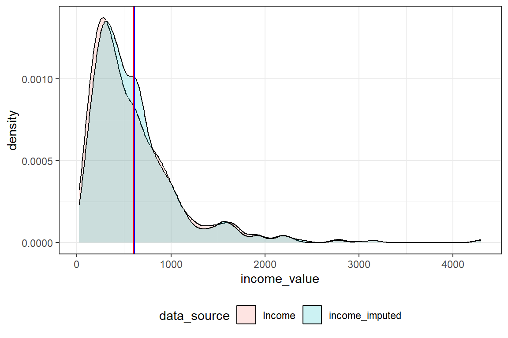
La figura 10.13 compara el ingreso original (Income) y el completado con medias por estrato (income_imputed), desagregados por zona y sexo. Las medianas son próximas y persisten algunas diferencias en la amplitud de las cajas. La línea roja indica la media del ingreso original en toda la muestra.
conditional_mean_boxplot <- ggplot(
conditional_mean_plot_data, aes(x = data_source, y = income_value)
) +
geom_hline(yintercept = mean(survey_data$Income), color = "red") +
geom_boxplot() +
facet_grid(Zone ~ Sex) +
theme_bw()
conditional_mean_boxplot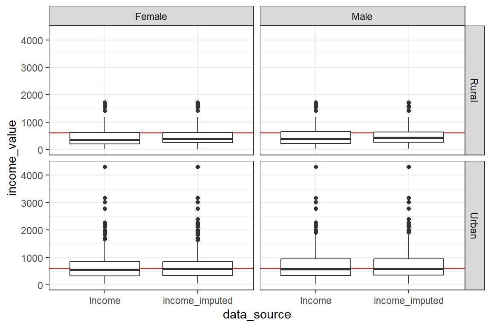
10.2.3 Imputación por hot-deck
La imputación por hot-deck reemplaza los valores faltantes de una unidad que no respondió (el receptor) con valores observados de otra unidad (el donante). El donante se selecciona por su similitud con el receptor en características observadas, como la edad, el género o la ubicación geográfica. El método se basa en la idea de que las unidades con características similares pueden tener valores similares en las variables de interés.
El término hot-deck hace referencia a las tarjetas perforadas utilizadas en los primeros sistemas informáticos para almacenar y recuperar datos. Esta técnica es relativamente simple y eficaz en conjuntos de datos pequeños o medianos, y se utiliza con frecuencia en encuestas y estudios de investigación social. Sin embargo, puede resultar menos eficaz en conjuntos grandes o complejos cuando es difícil encontrar observaciones similares o definir y medir las características relevantes de manera confiable.
El siguiente código ilustra el método con los datos de la encuesta:
donor_indices <- which(!is.na(survey_data$income_missing))
recipient_indices <- which(is.na(survey_data$income_missing))
survey_data$income_imputed <- survey_data$income_missing
set.seed(1234)
for (i in recipient_indices) {
donor_index <- sample(x = donor_indices, size = 1)
survey_data$income_imputed[i] <- survey_data$income_missing[donor_index]
}
sum(is.na(survey_data$income_imputed))[1] 0El código anterior identifica las observaciones con y sin valores faltantes en income_missing y crea income_imputed para almacenar los resultados. Luego, un bucle for recorre las observaciones receptoras. En cada iteración, la función sample selecciona aleatoriamente un donante entre las observaciones con ingreso disponible.
Una vez realizada la imputación, se calculan la media y la desviación estándar de los ingresos originales y de los completados por imputación:
survey_data %>%
summarise(
income_mean = mean(Income),
income_sd = sd(Income),
imputed_income_mean = mean(income_imputed),
imputed_income_sd = sd(income_imputed)
) income_mean income_sd imputed_income_mean imputed_income_sd
1 604 513 618 528El sesgo relativo de la media del ingreso es del 2,3 %. Al desagregar los resultados por zona, se obtiene lo siguiente:
survey_data %>%
group_by(Zone) %>%
summarise(
income_mean = mean(Income),
income_sd = sd(Income),
imputed_income_mean = mean(income_imputed),
imputed_income_sd = sd(income_imputed)
)# A tibble: 2 × 5
Zone income_mean income_sd imputed_income_mean imputed_income_sd
<chr> <dbl> <dbl> <dbl> <dbl>
1 Rural 469. 337. 504. 369.
2 Urban 731. 609. 726. 624.El sesgo relativo de la media del ingreso es del 7,4 % en la zona rural y del 0,7 % en la urbana. El mismo ejercicio se realiza por sexo:
survey_data %>%
group_by(Sex) %>%
summarise(
income_mean = mean(Income),
income_sd = sd(Income),
imputed_income_mean = mean(income_imputed),
imputed_income_sd = sd(income_imputed)
)# A tibble: 2 × 5
Sex income_mean income_sd imputed_income_mean imputed_income_sd
<chr> <dbl> <dbl> <dbl> <dbl>
1 Female 589. 504. 603. 503.
2 Male 622. 523. 636. 556.La figura 10.14 compara la densidad del ingreso original (Income) con la del ingreso completado mediante donantes aleatorios (income_imputed). Las curvas prácticamente se superponen en esta simulación, conservando la asimetría y la cola de ingresos altos. Las líneas roja y azul representan las medias original e imputada, respectivamente.
hot_deck_plot_data <- survey_data %>%
dplyr::select(Zone, Sex, Income, income_imputed) %>%
tidyr::gather(data_source, income_value, -Zone, -Sex)
hot_deck_density_plot <- ggplot(
hot_deck_plot_data, aes(x = income_value, fill = data_source)
) +
geom_density(alpha = 0.2) +
theme_bw() +
theme(legend.position = "bottom") +
geom_vline(xintercept = mean(survey_data$Income), color = "red") +
geom_vline(xintercept = mean(survey_data$income_imputed), color = "blue")
hot_deck_density_plot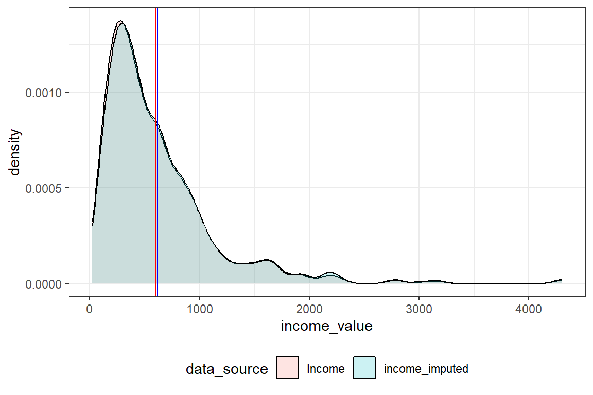
10.2.4 Imputación por regresión
La imputación por regresión utiliza las variables auxiliares disponibles para predecir los valores faltantes de la variable de interés. Primero, se identifican las variables predictoras relacionadas con ella. Luego, se ajusta un modelo con los valores observados y se utilizan sus coeficientes para predecir los valores faltantes.
En este ejemplo, se imputa el ingreso mediante un modelo de regresión lineal múltiple que utiliza la zona, el sexo y el gasto como covariables:
survey_data$income_imputed <- survey_data$income_missing
observed_data <- filter(survey_data, !is.na(income_missing))
missing_data <- filter(survey_data, is.na(income_missing))
imputation_model <- lm(Income ~ Zone + Sex + Expenditure, data = observed_data)Una vez ajustado el modelo, se predicen los valores faltantes:
predicted_income <- predict(imputation_model, newdata = missing_data)
missing_data$income_imputed <- predicted_income
survey_data <- bind_rows(observed_data, missing_data)A continuación, se calculan la media y la desviación estándar de los ingresos originales y de los completados por imputación:
survey_data %>%
summarise(
income_mean = mean(Income),
income_sd = sd(Income),
imputed_income_mean = mean(income_imputed),
imputed_income_sd = sd(income_imputed)
) income_mean income_sd imputed_income_mean imputed_income_sd
1 604 513 612 498El sesgo relativo de la media del ingreso es del 1,2 %. El mismo ejercicio se realiza por zona:
survey_data %>%
group_by(Zone) %>%
summarise(
income_mean = mean(Income),
income_sd = sd(Income),
imputed_income_mean = mean(income_imputed),
imputed_income_sd = sd(income_imputed)
)# A tibble: 2 × 5
Zone income_mean income_sd imputed_income_mean imputed_income_sd
<chr> <dbl> <dbl> <dbl> <dbl>
1 Rural 469. 337. 476. 317.
2 Urban 731. 609. 739. 595.La figura 10.15 compara las densidades del ingreso original (Income) y del completado con predicciones del modelo de regresión (income_imputed). La forma general es similar, aunque aparecen diferencias alrededor del tramo central de la distribución. Las líneas roja y azul indican las medias original e imputada, respectivamente.
regression_plot_data <- survey_data %>%
dplyr::select(Zone, Sex, Income, income_imputed) %>%
tidyr::gather(data_source, income_value, -Zone, -Sex)
regression_density_plot <- ggplot(
regression_plot_data, aes(x = income_value, fill = data_source)
) +
geom_density(alpha = 0.2) +
theme_bw() +
theme(legend.position = "bottom") +
geom_vline(xintercept = mean(survey_data$Income), color = "red") +
geom_vline(xintercept = mean(survey_data$income_imputed), color = "blue")
regression_density_plot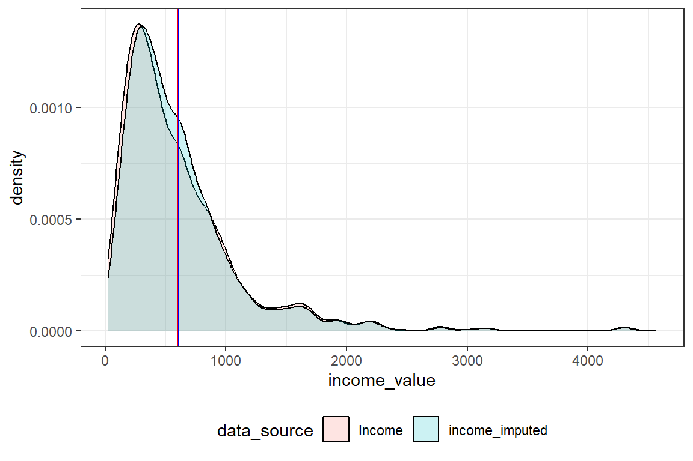
10.2.5 Imputación por el vecino más cercano
La imputación por el vecino más cercano reemplaza los valores faltantes con información de observaciones similares. El método se basa en la idea de que los registros con características semejantes tienden a tener valores similares en la variable de interés. En su versión con varios vecinos, se identifican los \(k\) registros más próximos al receptor y se utilizan sus valores para estimar el dato faltante.
Para calcular la similitud entre observaciones, se pueden utilizar diferentes medidas de distancia, como la distancia euclidiana o la distancia de Manhattan. La técnica también permite ajustar el valor de \(k\), que representa el número de vecinos más cercanos utilizados para estimar el valor faltante.
Este método es relativamente simple y fácil de implementar. Sin embargo, su eficacia depende de la cantidad y la calidad de los datos disponibles, así como del número de vecinos y de la medida de distancia elegidos. Por ello, conviene evaluar tanto la calidad de los datos como los resultados de la imputación.
La aplicación del método con un solo vecino comprende tres pasos:
- Definir una medida de distancia, como la euclidiana, para comparar las observaciones.
- Identificar, para cada receptor, el donante más cercano según la medida elegida.
- Reemplazar el valor faltante con el valor observado del donante.
En el siguiente ejemplo, se imputa el ingreso utilizando el gasto del individuo como variable auxiliar y la distancia euclidiana como medida de similitud.
survey_data$income_imputed <- survey_data$income_missing
observed_data <- filter(survey_data, !is.na(income_missing))
missing_data <- filter(survey_data, is.na(income_missing))
for (i in seq_len(nrow(missing_data))) {
recipient_expenditure <- missing_data$Expenditure[[i]]
donor_index <- which.min(abs(recipient_expenditure - observed_data$Expenditure))
missing_data$income_imputed[[i]] <- observed_data$income_missing[[donor_index]]
}
survey_data <- bind_rows(observed_data, missing_data)Las medias y las desviaciones estándar de los ingresos originales y de los completados por imputación se calculan de la siguiente manera:
survey_data %>%
summarise(
income_mean = mean(Income),
income_sd = sd(Income),
imputed_income_mean = mean(income_imputed),
imputed_income_sd = sd(income_imputed)
) income_mean income_sd imputed_income_mean imputed_income_sd
1 604 513 611 514La diferencia entre la media del ingreso original y la obtenida tras la imputación es de 6 unidades monetarias. El mismo ejercicio se realiza por zona:
survey_data %>%
group_by(Zone) %>%
summarise(
income_mean = mean(Income),
income_sd = sd(Income),
imputed_income_mean = mean(income_imputed),
imputed_income_sd = sd(income_imputed)
)# A tibble: 2 × 5
Zone income_mean income_sd imputed_income_mean imputed_income_sd
<chr> <dbl> <dbl> <dbl> <dbl>
1 Rural 469. 337. 478. 344.
2 Urban 731. 609. 735. 607.Las diferencias entre las medias son de 7 unidades monetarias en la zona rural y de 4 en la urbana.
La figura 10.16 compara la densidad del ingreso original (Income) y la del ingreso imputado con donantes de gasto similar (income_imputed). Las curvas son muy próximas y conservan la cola de ingresos altos. Las líneas roja y azul muestran las medias original e imputada, respectivamente.
nearest_neighbor_plot_data <- survey_data %>%
dplyr::select(Zone, Sex, Income, income_imputed) %>%
tidyr::gather(data_source, income_value, -Zone, -Sex)
nearest_neighbor_density_plot <- ggplot(
nearest_neighbor_plot_data, aes(x = income_value, fill = data_source)
) +
geom_density(alpha = 0.2) +
theme_bw() +
theme(legend.position = "bottom") +
geom_vline(xintercept = mean(survey_data$Income), color = "red") +
geom_vline(xintercept = mean(survey_data$income_imputed), color = "blue")
nearest_neighbor_density_plot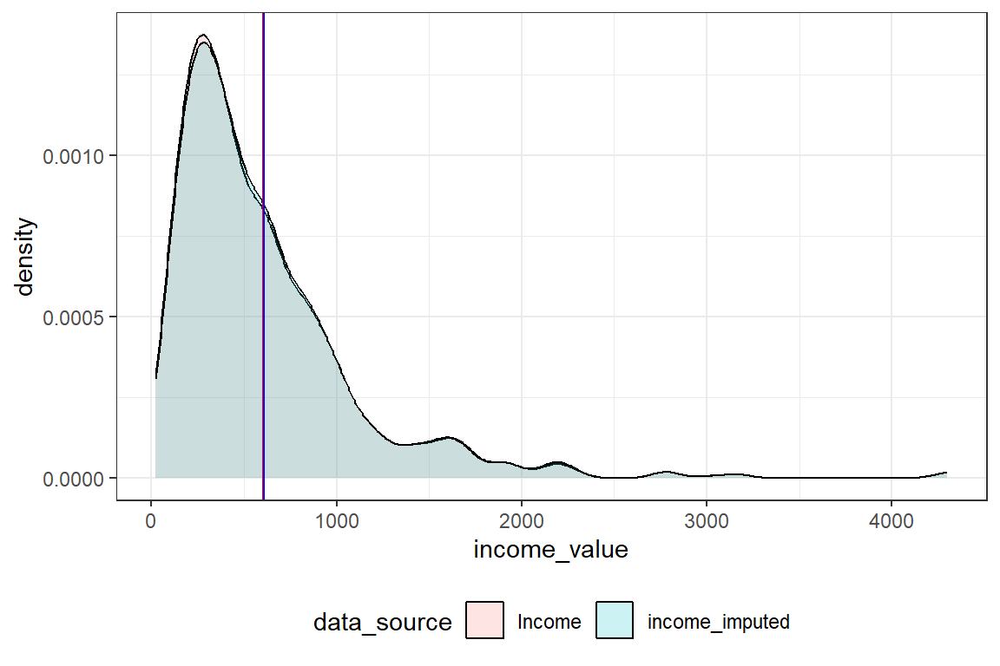
10.2.6 Imputación por el vecino más cercano con regresión
La imputación por el vecino más cercano con regresión comprende los siguientes pasos:
- Ajustar un modelo de regresión entre la variable de interés y las covariables auxiliares.
- Predecir los valores de la variable de interés para las observaciones con y sin datos faltantes.
- Comparar las predicciones de los posibles donantes con las de los receptores.
- Identificar, para cada receptor, el donante cuya predicción sea más cercana a la suya.
- Reemplazar el valor faltante con la información observada proveniente del donante.
En el siguiente ejemplo, se imputan los ingresos mediante un modelo que utiliza el sexo, la zona y el gasto como covariables:
survey_data$income_imputed <- survey_data$income_missing
observed_data <- filter(survey_data, !is.na(income_missing))
missing_data <- filter(survey_data, is.na(income_missing))
imputation_model <- lm(Income ~ Zone + Sex + Expenditure, data = observed_data)Con el modelo ajustado, se predicen los ingresos de las observaciones con y sin datos faltantes. Para cada receptor, se identifica el donante con la predicción más cercana y se utiliza su ingreso observado como valor imputado:
observed_predictions <- predict(imputation_model, newdata = observed_data)
missing_predictions <- predict(imputation_model, newdata = missing_data)
for (i in seq_len(nrow(missing_data))) {
donor_index <- which.min(abs(missing_predictions[i] - observed_predictions))
missing_data$income_imputed[[i]] <- observed_data$income_missing[[donor_index]]
}
survey_data <- bind_rows(observed_data, missing_data)Por último, se calculan la media y la desviación estándar de los ingresos originales y de los completados por imputación, como en los ejemplos anteriores:
survey_data %>%
summarise(
income_mean = mean(Income),
income_sd = sd(Income),
imputed_income_mean = mean(income_imputed),
imputed_income_sd = sd(income_imputed)
) income_mean income_sd imputed_income_mean imputed_income_sd
1 604 513 608 516La diferencia entre la media del ingreso original y la obtenida tras la imputación es cercana a 4 unidades monetarias.
La figura 10.17 compara el ingreso original (Income) con el completado mediante donantes cuyas predicciones son próximas a las del receptor (income_imputed). Las densidades prácticamente se superponen en esta simulación. Las líneas roja y azul representan las medias original e imputada, respectivamente.
predictive_matching_plot_data <- survey_data %>%
dplyr::select(Zone, Sex, Income, income_imputed) %>%
tidyr::gather(data_source, income_value, -Zone, -Sex)
predictive_matching_density_plot <- ggplot(
predictive_matching_plot_data, aes(x = income_value, fill = data_source)
) +
geom_density(alpha = 0.2) +
theme_bw() +
theme(legend.position = "bottom") +
geom_vline(xintercept = mean(survey_data$Income), color = "red") +
geom_vline(xintercept = mean(survey_data$income_imputed), color = "blue")
predictive_matching_density_plot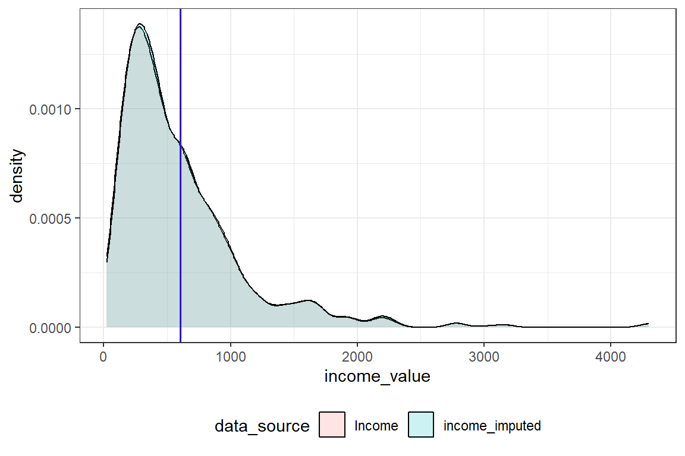
10.2.7 Imputación múltiple
La imputación múltiple crea varias copias del conjunto de datos y completa los valores faltantes de cada una mediante modelos estadísticos basados en las relaciones entre las variables. Cada copia se analiza por separado y los resultados se combinan para obtener una estimación final que refleje la incertidumbre asociada con la imputación.
La imputación múltiple permite tratar los datos faltantes y puede ofrecer resultados más precisos y menos sesgados que la eliminación de las observaciones incompletas. Sin embargo, requiere recursos computacionales y conocimientos estadísticos para su aplicación adecuada. Esta técnica fue propuesta por Rubin (1987) y consiste en generar \(M > 1\) conjuntos de valores para los datos faltantes.
Para ilustrar el método, se considera un conjunto de \(n\) observaciones de dos variables, \(X\) e \(Y\), relacionadas mediante el siguiente modelo de regresión lineal simple:
\[y_i = \beta x_i + \varepsilon_i\]
El modelo se aplica a cada individuo \(i = 1, \ldots, n\), con errores de distribución normal tales que \(E(\varepsilon) = 0\) y \(Var(\varepsilon) = \sigma ^2\). Se define \(Y_{Obs}\) como un vector que contiene los valores observados para un conjunto de individuos de tamaño \(n_1\), y \(Y_{NoObs}\) como el vector de los valores no observados de tamaño \(n_0\), es decir, \(n_1 + n_0 = n\). Además, se supone que fue posible observar los valores de la covariable \(X\) para todos los individuos en la muestra.
Al final, el valor imputado corresponderá al promedio de esos \(M\) valores. Dado que el interés es la estimación de la pendiente de la regresión lineal simple \(\beta\), entonces la esperanza estimada al utilizar la metodología de imputación múltiple está dada por:
\[E(\hat{\beta} | Y_{obs}) = E(E(\hat{\beta} | Y_{obs}, Y_{mis}) | Y_{obs})\]
Esta expresión se estima mediante el promedio de las \(M\) estimaciones puntuales de \(\hat{\beta}\) sobre las \(M\) imputaciones, dado por:
\[\bar{\hat{\beta}} = \frac{1}{M} \sum_{m = 1} ^ M \hat{\beta}_m\]
La varianza estimada al utilizar la metodología de imputación múltiple está dada por la siguiente expresión:
\[ V(\hat{\beta} | Y_{obs}) = E(V(\hat{\beta} | Y_{obs}, Y_{mis}) | Y_{obs}) + V(E(\hat{\beta} | Y_{obs}, Y_{mis}) | Y_{obs}) \]
El primer término de la expresión anterior se estima como el promedio de las varianzas muestrales de \(\hat{\beta}\) sobre las \(M\) imputaciones, dado por:
\[\bar{U} = \frac{1}{M} \sum_{m = 1} ^ M Var(\beta)\]
El segundo término se estima como la varianza muestral de las \(M\) estimaciones puntuales de \(\hat{\beta}\) sobre las \(M\) imputaciones, dada por:
\[B = \frac{1}{M-1} \sum_{m = 1} ^ M (\hat{\beta}_m - \bar{\hat{\beta}})\]
Es necesario tener en cuenta un factor de corrección (puesto que \(M\) es finito). Por tanto, la estimación del segundo término viene dada por la siguiente expresión:
\[ (1 + \frac{1}{M}) B \]
Por tanto, la varianza estimada es igual a: \[\hat{V}(\hat{\beta} | Y_{obs}) = \bar{U} + (1 + \frac{1}{M}) B\]
El siguiente ejemplo aplica la imputación múltiple a los datos de la encuesta:
survey_data$income_imputed <- survey_data$income_missing
survey_data$employment_imputed <- survey_data$employment_missing
observed_data <- filter(survey_data, !is.na(income_missing))
missing_data <- filter(survey_data, is.na(income_missing))
n_missing <- nrow(missing_data)
n_observed <- nrow(observed_data)Primero, se separan las observaciones con y sin valores faltantes y se calcula el número de observaciones de cada grupo.
n_imputations <- 10
set.seed(1234)
for (i in seq_len(n_imputations)) {
imputation_column <- paste0("income_draw_", i)
bootstrap_data <- observed_data %>%
sample_n(size = n_observed, replace = TRUE)
imputation_model <- lm(Income ~ Zone + Sex + Expenditure, data = bootstrap_data)
missing_data[[imputation_column]] <- predict(imputation_model, missing_data)
observed_data[[imputation_column]] <- observed_data$Income
}El código anterior ajusta modelos de regresión lineal con Income como variable de respuesta y Zone, Sex y Expenditure como covariables. Estos modelos permiten predecir los ingresos faltantes en missing_data. Una vez ejecutado el código, se muestran los ingresos originales y algunos de los valores imputados:
dplyr::select(missing_data, Income, matches("income_draw_"))[1:10, 1:4] Income income_draw_1 income_draw_2 income_draw_3
1 409.9 550 566 568
2 409.9 561 529 542
3 90.9 211 226 164
4 90.9 221 189 138
5 90.9 211 226 164
6 135.3 223 238 178
7 135.3 223 238 178
8 1539.8 785 801 847
9 336.0 508 473 440
10 685.5 593 558 541La figura 10.18 compara la densidad del ingreso original, representada por la línea negra, con las de los diez conjuntos completados, representadas por las líneas de colores (income_draw_1 a income_draw_10). Las curvas mantienen una forma similar, con pequeñas diferencias en el tramo central que reflejan la variación entre las imputaciones.
survey_data <- bind_rows(observed_data, missing_data)
multiple_imputation_plot_data <- survey_data %>%
dplyr::select(Zone, Sex, matches("income_draw_")) %>%
tidyr::gather(data_source, income_value, -Zone, -Sex)
multiple_imputation_density_plot <- ggplot(
multiple_imputation_plot_data, aes(x = income_value, color = data_source)
) +
geom_density(alpha = 0.2) +
theme_bw() +
theme(legend.position = "bottom") +
geom_density(
data = survey_data,
aes(x = Income),
color = "black",
linewidth = 1.2
)
multiple_imputation_density_plot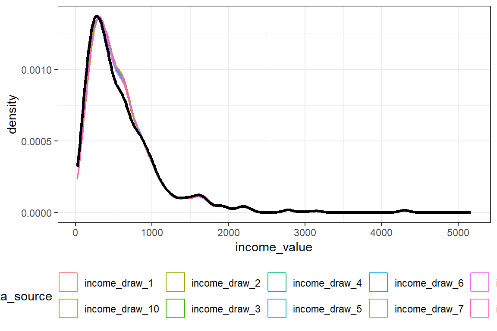
Con los conjuntos de datos completados, se define el diseño muestral para estimar los parámetros de interés:
survey_design <- survey_data %>%
as_survey_design(strata = Stratum, ids = PSU, weights = wk, nest = TRUE)Con este diseño, se estima la media del ingreso y su varianza para cada conjunto de datos completado:
mean_estimates <- survey_design %>%
summarise(across(starts_with("income_draw_"), ~ survey_mean(.x, vartype = "var"))) %>%
tidyr::gather() %>%
separate(key, c(NA, NA, "imputation", "statistic"), fill = "right") %>%
mutate(
imputation = as.numeric(imputation),
statistic = ifelse(is.na(statistic), "mean", "var")
) %>%
spread(statistic, value)
mean_estimates# A tibble: 10 × 3
imputation mean var
<dbl> <dbl> <dbl>
1 1 619. 846.
2 2 618. 845.
3 3 617. 868.
4 4 618. 857.
5 5 620. 858.
6 6 617. 853.
7 7 618. 861.
8 8 619. 868.
9 9 617. 850.
10 10 616. 870.Para obtener la estimación combinada de la media y su varianza, se realizan los cálculos basados en las expresiones anteriores:
pooled_mean <- mean(mean_estimates$mean)
within_variance <- mean(mean_estimates$var)
between_variance <- var(mean_estimates$mean)
within_variance[1] 857between_variance[1] 1.65pooled_mean_variance <- within_variance + (1 + 1 / n_imputations)
pooled_results <- data.frame(
pooled_mean = pooled_mean,
mean_se = sqrt(pooled_mean_variance)
)
pooled_results pooled_mean mean_se
1 618 29.3variance_estimates <- survey_design %>%
summarise_at(vars(matches("income_draw")), survey_var, vartype = "var")Otro parámetro de interés es la varianza del ingreso, que mide su dispersión entre las personas de la muestra. Para estimarla, se aplica el mismo procedimiento utilizado para la media, cambiando el parámetro de interés:
variance_estimates <- variance_estimates %>%
tidyr::gather() %>%
separate(key, c(NA, NA, "imputation", "statistic"), fill = "right") %>%
mutate(
statistic = ifelse(is.na(statistic), "mean", "var"),
imputation = as.numeric(imputation)
) %>%
spread(statistic, value)
variance_estimates# A tibble: 10 × 3
imputation mean var
<dbl> <dbl> <dbl>
1 1 262690. 3074674460.
2 2 263092. 3079895581.
3 3 274370. 3237991671.
4 4 269127. 3164842634.
5 5 270450. 3165285304.
6 6 264993. 3106582542.
7 7 270916. 3175865575.
8 8 276070. 3251836316.
9 9 265061. 3111426636.
10 10 275462. 3258214990.Por último, se combinan las estimaciones mediante las expresiones anteriores:
pooled_variance <- mean(variance_estimates$mean)
within_variance <- mean(variance_estimates$var)
between_variance <- var(variance_estimates$mean)
pooled_variance_variance <- within_variance +
(1 + 1 / n_imputations) * between_variance
pooled_results$pooled_variance <- pooled_variance
pooled_results$variance_se <- sqrt(pooled_variance_variance)
cbind(pooled_variance, pooled_variance_variance) pooled_variance pooled_variance_variance
[1,] 269223 3191037330